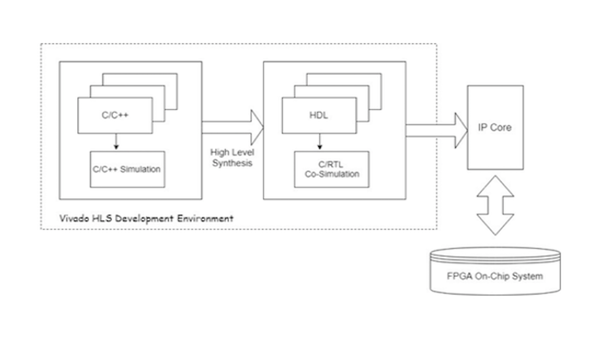
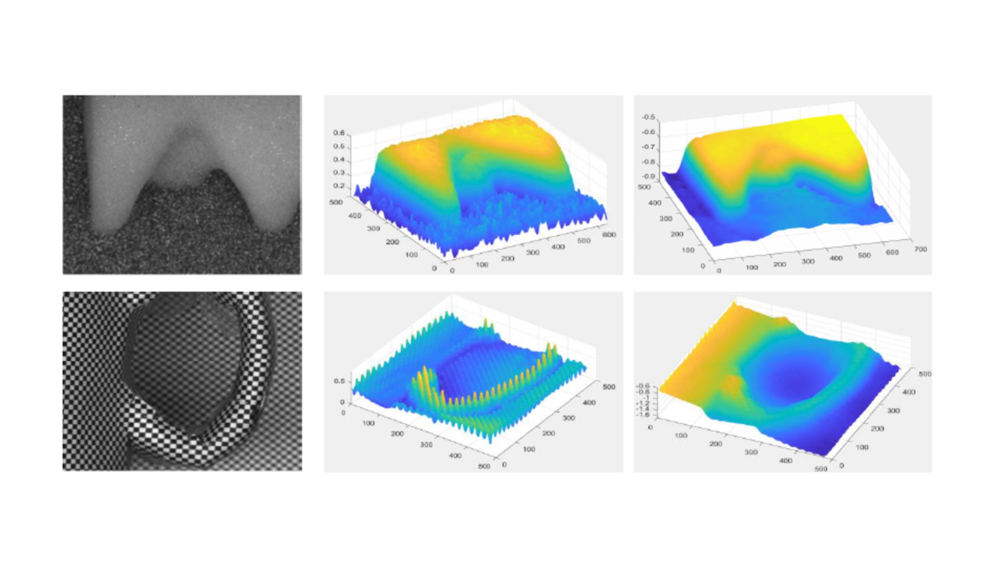

Rulin Chen is currently a Ph.D. candidate at Computer Graphics Laboratory (CGL), SUTD, Singapore, under supervision of Prof. Peng Song. He finished his Bachelor degree at Shantou University, China. The topic of his study mainly focuses on designing 3D assemblies using assembly-aware computational methods. Particularly, his work can be applied to design high-level interlocking puzzles and architectures.
News
- 2022.06: One paper is honored with the SIGGRAPH 2022 Technical Papers Honorable Mention Award!
- 2022.04: One paper has been selected for inclusion in the Technical Papers Video Trailer Siggraph 2022.
- 2022.03: One paper has been accepted by Siggraph 2022.
- 2022.02: Pass the QPE and become a Ph.D candidate
- 2020.09: Enrolled as a Ph.D. student at CGL, SUTD under supervision of Prof. Peng Song
Educations
- Ph.D. in Computer Graphics, Computer Graphics Laboratory, SUTD, Singapore, 2020.09 - present
- Bachelor in Electrical Information Engineering, Shantou University, 2016.09 - 2020.06
Professional Experience
- 2022 Aug, 2022 Oct : Student Facilitator, FACT Programme, SUTD
- 2021 Fall, 2022 Fall : Teaching Assistant for Graphics and Visualization (50.017), SUTD
- 2019.9 - 2020.6 : Research Assistant, The Chinese University of Hong Kong (Shenzhen Campus)
- 2017.9 - 2019.6 : Research Assistant, Shantou University
Awards
- SIGGRAPH 2022 Technical Papers Honorable Mention Award
- SUTD PhD Fellowship
Publications
Computational Design of High-level Interlocking Puzzles
Rulin Chen, Ziqi Wang, Peng Song, Bernd Bickel
ACM Transactions on Graphics (Proc. of SIGGRAPH), 2022

FPGA Design of Real-time MDFD System using High-level Sysnthesis
Chuliang Wei, Rulin Chen, Qin Xin
IEEE Access [pdf]

Shape Reconstruction from a Monocular Defocus Image Using CNN
Rulin Chen, Alex Noel Joseph Raj, Xun Ma, Zhemin Zhuang
SAI Intelligent Systems Conference 2020 [pdf]
Invited Talks

Computational Design of High-level Interlocking Puzzles
ACM Transactions on Graphics (Proc. of SIGGRAPH), 2022 [video]